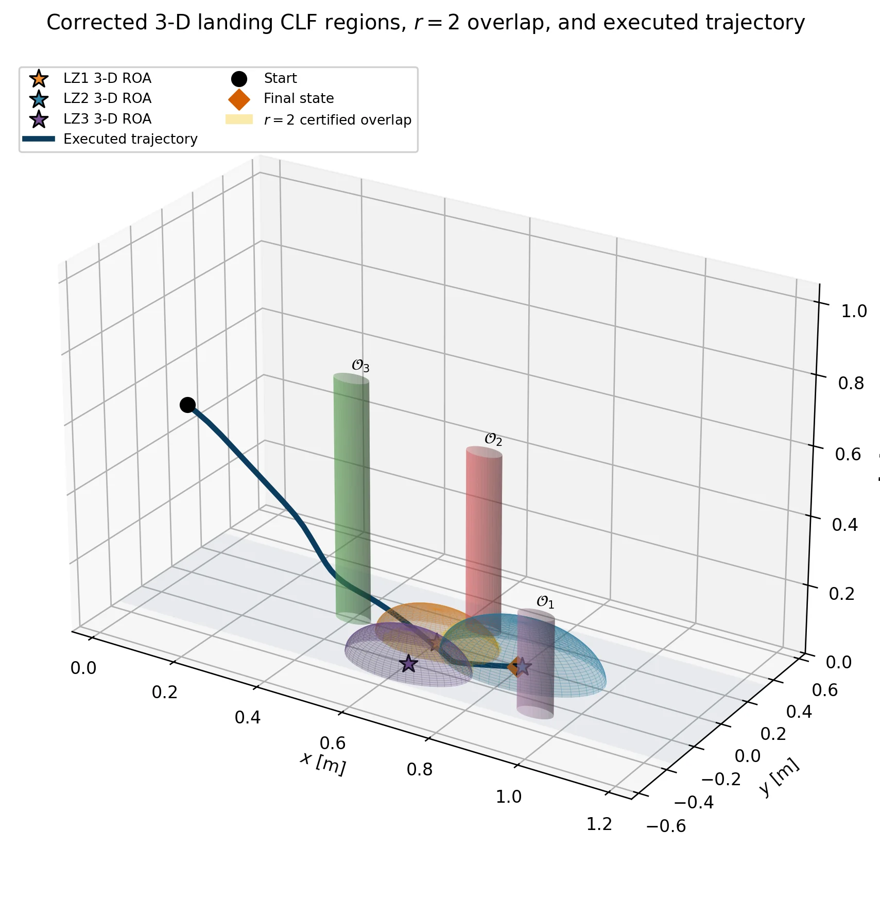
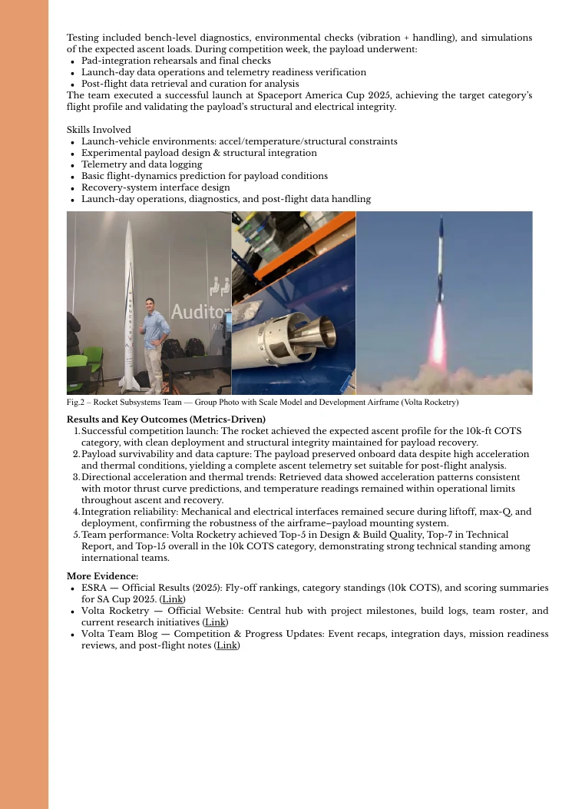
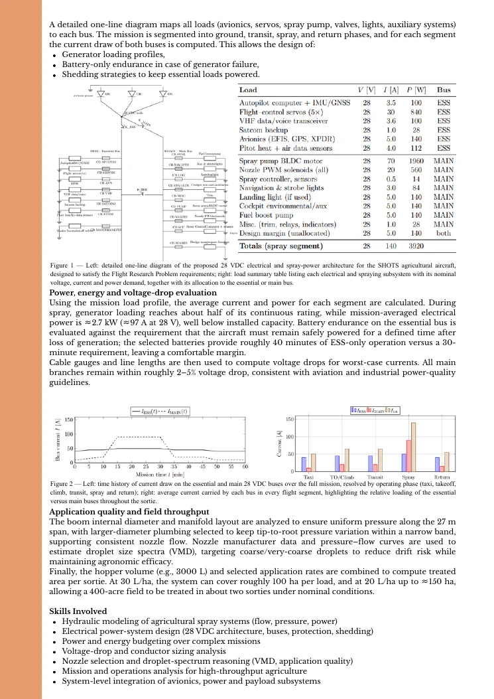

ATMOS — Autonomy Testbed for Multi-purpose Orbiting Systems
Free-flying spacecraft testbed used for simulation, motion tracking, hardware integration and autonomous-systems validation.
View project ↗
Each project opens into a technical record with scope, architecture, results and original visual evidence from the supplied project documentation.
Free-flying spacecraft testbed used for simulation, motion tracking, hardware integration and autonomous-systems validation.
View project ↗
High-fidelity multi-UAV environment coupling embodied flight, relay topology, Sionna link evaluation, packet gating, faults and recovery.
View project ↗
Payload, sensing, telemetry and launch-day data operations for a high-power collegiate rocket.
View project ↗
Propeller–motor–battery matching, electrical power budget, test cards and flight-readiness support for a competition UAS.
View project ↗
Conceptual 28 VDC architecture, spray hydraulics, power budgeting and mission-level sizing for a high-throughput agricultural aircraft.
View project ↗
Canard/glider design, nozzle and combustion instrumentation, Pilatus PC-12 system mock-up, wind-tunnel testing and CFD-oriented coursework.
View projects ↗
ATMOS is a free-flying spacecraft testbed used to develop and validate autonomous space-system workflows before deployment.
Repository-level support, ROS 2/Gazebo/PX4 simulation, motion-capture integration, IoT instrumentation and hardware-validation workflows during the Caltech SURF period.
A reusable research framework for Swarm Network-as-a-Service experiments in which UAV motion and radio-service feasibility evolve together in one runtime loop.
Packets progress only across links that satisfy configured range, SNR and capacity constraints.
ROS 2 maintains UAV state, relay graph, packets, faults and topology policies while Sionna supplies link metrics and Isaac Sim executes embodied motion.
Injected UAV/link faults trigger path recomputation and topology reconfiguration when another feasible route exists.
Experiments generate JSONL events, CSV link metrics, topology state and visual evidence for repeatable analysis.


Designed, integrated and tested a CanSat-class payload/telemetry subsystem for a 10k-ft COTS rocket, including IMU/barometric sensing, onboard logging, payload-airframe interfaces and post-flight data handling.
Sensor integration, payload-airframe interfaces, flight-data acquisition, environmental checks, launch-day operations and post-flight telemetry reconstruction.

Led propeller–motor–battery matching and electrical architecture, developed thrust/current/voltage test cards and supported ground-staging and mission readiness for the JACAMAR fixed-wing UAS.
The team qualified and flew at the Wichita DBF fly-off. The supplied portfolio documents the propulsion/electrical trade studies, integration work and competition participation.
Integrated hydraulic spray-system sizing with electrical load analysis, generator/battery sizing, conductor voltage-drop checks, mission segmentation and GNSS/autopilot-oriented rate-control requirements for a high-throughput agricultural aircraft concept.

Small-aircraft aerodynamic sizing, mass distribution, stability considerations, fabrication and flight testing.
Instrumented academic convergent–divergent nozzle and combustion demonstration with sensing, DAQ and safety interlocks.
Scaled mechatronics model representing aircraft environmental-control flow/valving logic with Arduino-controlled actuation.
Experimental high-lift surface characterization and computational aerodynamic studies, including ANSYS-based flow analysis.